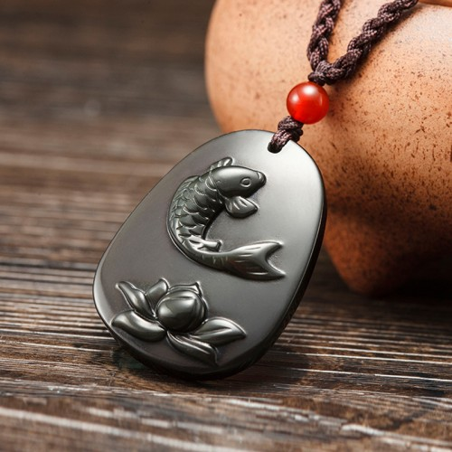

Tips：农历生肖运势即将进入2018年狗年，属羊2018年运势及运程抢先看，新年早开运，狗年求吉祥！
属羊2017年运势及运程详解
出生年：2003、1991、1979、1967、1955、1943年
属羊人2017年事业运势
子玉风水大师点评：面对挑战 慎防构陷
生肖属羊的人，进入2017年丁酉鸡年，今年的流年运势欠佳，因为命宫中凶星混杂，以致运势崎岖，诸多阻滞，所以必须步步为营，沉着应变；切勿轻举妄动，以免一败涂地！因有「天狗」凶星出现在命宫中，今年在工作方面将会面对不少强劲的对手，而且亦很可能被同事排挤杯葛，以致事业发展出现问题；属羊的人应尽量设法化解以上的危机，否则今年的一切努力将会徒劳无功。此外，因有「灾杀」凶星照命，警示今年很可能受小人构陷、或受损友拖累而遭受无妄之灾！所以除了要洁身自爱之外，并需慎防小人以及远离损友，以免横祸飞来而损害事业前途。属羊的人全年的工作运势，以年初的两个月最为低沉，在这期间处理业务必须加倍小心谨慎。夏季的三个月运势较为畅顺，应尽量好好把握这难得的时机，否则便会后悔莫及！年尾的三个月运势欠佳，将会有不少人事纷争出现。今年工作进展诸多困阻的月份，是农历正月、二月、七月、八月及十一月，在以上这几个月期间，处事必须格外小心谨慎。工作进展较佳的月份，是农历五月、六月及九月。

属羊人2017年财运精准预测
子玉风水大师点评：钱财易泄 未雨绸缪
属羊的人，今年财星破损，财运低迷不振；非但正财收入欠稳，而且还会不断钱财向外流泄，故此理财必须加倍小心，以免入不敷支而出现经济困难的窘境。今年绝对不宜作重大投资，以免出现巨额亏损！而赌博更绝非所宜，否则便会泥足深陷而难以自拔。今年将会有不少额外开支，而且很可能需要破财挡灾，故此应该及早未雨绸缪，早作储蓄以备不时之用。今年财运低迷的月份，是农历正月、二月、三月、七月、八月及十一月；农历四月切勿沉迷赌博，七月可能要破财挡灾。今年财运较佳的月份，是农历五月、月及九月，应好好把握时机开源节流。出门求财，可查一下今年财神方位，择吉日而行。
属羊人2017年健康运势
子玉风水大师点评：身心俱疲 慎防血光
属羊的人，今年健康情况欠佳，容易出现问题；身心俱疲；必须有足够睡眠休息，以免积劳成疾。今年最需要注意的，是心脏和血压的护理，必须小心保养；有毛病出现，便需及早延医诊治，切无闲视之。因为有「吊客」凶星出现在命宫中，这警示今年易惹血光之灾，必须密切注意安全；除了出门在外不可随便涉险之外，并要尽量避免与人激烈争吵。今年健康容易出问题的月份，是农历正月、二月、七月及八月。农历四月、八月、十一月及十二月慎防误惹血光之灾。
属羊人2017年爱情婚姻运势
子玉风水大师点评：感情坎坷 小心维系
属羊的人，今年情绪波动甚大，容易与人发生意见，必须尽量保持冷静克制，以免失控而一发不可收拾。感情方面，今年情路坎坷，非但时冷时熟，而且易起风波，若不全力小心维系，很可能感情破裂而劳燕分飞！不管情况如何，最好看开一些，随缘而往。今年感情易出问题的月份，是农历的正月、三月、七月及十月。今年感情发展较佳的月份，是农历五月、月、九月及十二月。属羊的婚配查询：属羊的和什么属相最配
属羊的青少年2017年运势
今年读书情绪时高时低，以致学业进展反反复覆！故此必须加倍努力，否则成绩便会远居人后！健康欠佳，必须作息定时，饮食有节，以免病魔得以乘虚而入。今年容易招惹小人是非，校内校外均需尽量保持低调。
属羊的女性2017年运势
今年财运欠佳，必须密切注意家中的经济开支，以免钱财流泄不止。健康易出问题，慎防心肺受损；千万不可过劳，更切勿讳疾忌医。属羊的少女今年感情变化复杂，自己也难以捉摸；若不小心维系，便很可能感情彻底破裂。
属羊人2017年开运吉祥物

属羊人2017年吉凶方位
属羊的人今年的三个生旺吉方，是东方、东南及西北；若能把睡床、工作台和沙发摆放在屋内这三个方位上，便可符合这生肖今年的风水趋吉之道，有助改善流年运程。
倘若未能如此，最少亦要把这三种最重要的家具避开北方及南方，以符合避凶之道。
以上所提出的吉凶方位，是纯以生肖属羊的人来计算；而与其它十二生肖无关，请勿混淆。
属羊人2017年幸运色
属羊的人今年的生旺颜色是绿、蓝以及白色；若能利用这些颜色来布置房间、或配衬衣物，这会对改善流年运程大有帮助！属羊的人今年忌黄色及橙色，最好能尽量避免使用。
属羊人2017年幸运数字
属羊的人今年的生旺数字是1及9。
抢先关注：属羊的人2018年运程
不同羊年出生的属羊人2017年运势详解
2003年属羊的人2017年运程
2003年出生的人，今年读书情绪时高时低，以致学业成绩反复。健康欠佳，作息要有定时！尽量远离损友。
1991年属羊的人2017年运程
1991年出生的人，今年情绪波动甚大，感情易起风波，慎防感情破裂。工作诸多阻滞，而且会受到排挤。91年属羊人今年若要开运解灾，增旺运势，可佩戴本站周易专家团队精心设计的属羊2017吉祥物吊坠，该圣品图案为鱼鲤鱼跃于莲花之上，采用高档彩虹眼黑曜石精雕而成，寓意您在2017年事业奋发向上，考试鲤跃龙门，爱情圣洁圆满，生意大获丰收，财富年年有余。亦可同时佩戴增庆堂属羊六合贵人手链，更具功效。开车人士，可在爱车挂上一串增庆堂富贵如意琉璃挂件，以保行车安全。
1979年属羊的人2017年运程
1979年出生的人，今年财运低迷，正财横财俱不宜憧憬。尽量避免与人剧烈争吵，以免惹来血光之灾。79年属羊人今年若要开运解灾，增旺运势，可佩戴本站周易专家团队精心设计的属羊2017吉祥物吊坠，该圣品图案为鱼鲤鱼跃于莲花之上，采用高档彩虹眼黑曜石精雕而成，寓意您在2017年事业奋发向上，考试鲤跃龙门，爱情圣洁圆满，生意大获丰收，财富年年有余。亦可同时佩戴增庆堂属羊六合贵人手链，更具功效。开车人士，可在爱车挂上一串增庆堂富贵如意琉璃挂件，以保行车安全。
1967年属羊的人2017年运程
1967年出生的人，今年必须懂得明哲保身，以免受小人或损友拖累而泥足深陷。及早储蓄，以备不时之需。67年属羊人今年若要开运解灾，增旺运势，可佩戴本站周易专家团队精心设计的属羊2017吉祥物吊坠，该圣品图案为鱼鲤鱼跃于莲花之上，采用高档彩虹眼黑曜石精雕而成，寓意您在2017年事业奋发向上，考试鲤跃龙门，爱情圣洁圆满，生意大获丰收，财富年年有余。亦可同时佩戴增庆堂属羊六合贵人手链，更具功效。开车人士，可在爱车挂上一串增庆堂富贵如意琉璃挂件，以保行车安全。
1955年属羊的人2017年运程
1955年出生的人，今年理财必须格外小心谨慎，以免入不敷支。工作进展枝节横生，稍有疏忽便会徒劳无功。55年属羊人今年若要开运解灾，增旺运势，可佩戴本站周易专家团队精心设计的属羊2017吉祥物吊坠，该圣品图案为鱼鲤鱼跃于莲花之上，采用高档彩虹眼黑曜石精雕而成，寓意您在2017年事业奋发向上，考试鲤跃龙门，爱情圣洁圆满，生意大获丰收，财富年年有余。亦可同时佩戴增庆堂属羊六合贵人手链，更具功效。开车人士，可在爱车挂上一串增庆堂富贵如意琉璃挂件，以保行车安全。
1943年属羊的人2017年运程
1943年出生的人，今年财运欠佳，必须密切注意开支。健康易出问题，慎防心肺受损，千万不可过劳。
属羊人2017年全年每月运势
农历正月 公历2017年2月3日至3月5日
本月财星破损，劳而无功
生肖属羊的人今年运势崎岖不平，年初这个月因为命宫中凶星混杂，故此未可大举出击，以免出师不利。工作进展将会有诸多阻滞，劳而无功！在这段期间最重要的，是暂时只能稳守，宜守不宜攻；先求能屹立不倒，然后再随图后计！在此时轻举妄动，只会令自己一败涂地。财星破损，正财收入大减，而且还会有不少额外开支，很可能出现经济危机。健康易出问题，慎防过劳及传染。感情忽冷忽热，患得患失。
农历二月 公历2017年3月6日至4月4日
本月内外交煎，身心俱疲
这个月的运势依然低沉，因有「天狗」凶星照命，警示外有强敌环伺，虎视眈眈；而内受同事排挤，陷入内外交煎之局！在这段期间最重要的，是必须沉着应变，除了要沉着地去面对挑战之外，并要沉着地去化解人事纷争；尽量化除彼此的敌意及分歧，否则便会令自己的事业进展举步维艰。财运每况愈下，正财横财俱不宜憧憬，及早积谷防饥为宜。健康欠佳，身心俱疲，必须有足够休息睡眠，慎防积劳成疾。
农历三月 公历2017年4月5日至5月5日
本月明哲保身，随遇而安
这个月的运势略有起色，但暴风雨过后，仍有余波未了，所以工作进展暗涌潜伏，而且人事纷争仍未平息，故此切勿掉以轻心，以免大意失荆州！在这段期间最重要的，是尽量保持低调，明哲保身，远离是非，以免成为众矢之的而备受攻击。财运虽然略有改善，但暂时仍未是作重大投资的时机；而横财则更切勿强求，以免自招损失。这个月感情落寞，会有孤寂无伴之叹，但情缘未至，只能随遇而安，强求无益。
农历四月 公历2017年5月6日至6月5日
本月蓄势待发，未可急进
这个月的运势反复向上，年初的晦气至此一扫而空，工作进展开始出现转机，而人事纷争亦逐渐平息；可惜欠缺吉星生扶，故此难以言吉！在这段期间最重要的，是暂时未可急进，只能蓄势待发，努力充实自己，做好出击的准备，时机成熟便可一击即中。财运渐有起色，正财收入丰足无虞；但横财反复，时好时坏，故此千万不可沉迷赌博。这个月健康良好，但易惹血光之灾，攀山及游水均必须密切注意安全第一。
农历五月 公历2017年6月6日至7月7日
本月机缘巧合，全力以赴
因为命宫中吉星拱照，这个月的运势畅旺，大吉大利，正是大举出击的难得好时机！必须好好把握，切勿失诸交臂。工作方面，福至心灵，工作能力及创意特佳，处事得心应手！在这段期间最重要的，是要专心做好自己的工作，而切勿多管闲事，以免节外生枝而夜长梦多。这个月财星高照，若要投资创业或置业，这个月将会有利可图；横财亦会有所收获，但不宜过贪。易与异性擦出感情火花，情投意合。
农历六月 公历2017年7月8日至8月7日
本月贵人相助，谦厚受益
这个月的运势依然畅旺，农历五月及六月是属羊的人全年最畅旺的一段时期，若想今年有所作为，则必须好好把握这难得的好时机。工作进展畅旺，而且又会有贵人指引提携！在这段期间最重要的，是要不记旧怨，广结善缘，努力设法改善人际关系，谦厚待人以争取多些支持。财运颇佳，财源广进，但月尾开始反复向下，故此理财千万不可掉以轻心，以免钱财突然大量流泄不止。感情生活多姿多彩，但切勿大放纵。
农历七月 公历2017年8月8日至9月7日
本月易招小人，慎防官非
因有「囚狱」凶星照命，这个月的运势急剧逆转；工作进展往往遭受阻挠破坏，而且特别容易招惹小人是非、或甚至引起官非诉讼！在这段期间最重要的，是必须洁身自爱，切勿受人诱惑而同流合污！此外，对小人必须敬而远之，以免受其株连。财星破损，财运一落千丈；横财切勿强求，以免因贪而变贫！此外，月尾很可能要破财挡灾。健康欠佳，慎防患上传染病。感情方面需慎防小人从中破坏，切勿随便轻信谣言。
农历八月 公历2017年9月8日至10月8日
本月钱财易泄，慎保安康
这个月因为命宫中有众多凶星混杂，故此运势每下愈况。工作进展有如逆水行舟，易退而难非进；而且人事纷争有増无已，真有如雪上加霜！在这段期间最重要的，是身处逆境中更要激起斗心，坚持到底，切勿轻易放弃，以免前功尽废。财运依然低迷不振，钱财易泄难聚，这个月将会有不少额外开支，很可能因大失预算而出现经济危机。健康易出问题，必须密切注意心脏和血压的保养；并需注意交通安全，慎保安康。
农历九月 公历2017年10月9日至11月7日
本月颓气尽消，奋发向上
这个月因福星高照，运势大有起色，即使偶有困阻，亦将可逢凶化吉！工作困阻消除，颓气尽消，正是奋发向上，脱颖而出的大好时机！在这段期间最重要的，是要设法处理好人际关系，多些沟通包容，消除歧见对立，以免对事业前途有损。财运大有起色，正财转趋畅旺，但横财甚为反复波动，故此必须见好即收，以免最终得不偿失。健康虽有好转，但仍需注意饮食卫生。易与异性擦出火花，珍惜机缘培养感情。
农历十月 公历2017年11月8日至12月7日
本月得失随缘，知足常乐
这个月的运势反复向下，先盛后衰；月初尚算畅顺，但月中开始便将会出现不少波折，故此必须保持警惕戒备，有备则可无患。在这段期间最重要的，是凡事必须量力而为，倘若真的不自量力，则非但吃力不讨好，而且还会累及别人。财运转趋低迷，幸而正财收入尚算稳定；但横财则切勿强求，请记紧知足常乐这古训。这个月健康尚可，但必须密切注意照顾家中小童。感情忽冷忽热而难以捉摸，得失随缘。
农历十一月 公历2017年12月8日至2018年1月5日
本月诸多阻滞，妄动招悔
因有「灾杀」凶星照命，这个月的运势崎岖不平，故此必须步步为营，以免不慎摔得一蹶不振！工作劳碌奔波，诸多阻滞，而且还会因小人作梗而很可能半途夭折！在这段期间最重要的，是要谋定而后动，倘若意气用事而轻举妄动，很可能被对手乘虚而入而自招败辱。这个月钱财易泄，理财必须加倍小心谨慎！此外，并需仔细检查财务支出有何漏洞，及早加以堵塞。易惹血光之灾，切勿随便渉险或与人争吵。
农历十二月 公历2018年1月6日至2月4日
本月逆流而上，不进则退
属羊的人今年运势崎岖，幸而年尾这个月运势回升，虽非大吉大利，但因灾星消退，故此尚可强差人意。工作困阻大致消除，而是非纷争亦逐渐平息！在这期间最重要的，是要激励自己奋力逆流而上，自求多福；倘若畏缩不前，便将会落后于人而惨被淘汰。财运略有起色，但暂时仍不适宜投资创业或置业，以免自招损失。健康并无大碍，但仍需密切注意人身安全，切勿随便渉险。感情出现转机，好好珍惜。
2018年运程十二生肖运势：属羊2018年运势及运程
读过此篇文章的网友还读过：
☑ 属鸡的人2017年运程
☑ 属狗的人2017年运程
☑ 属猴的人2017年运程
☑ 属猪的人2017年运程